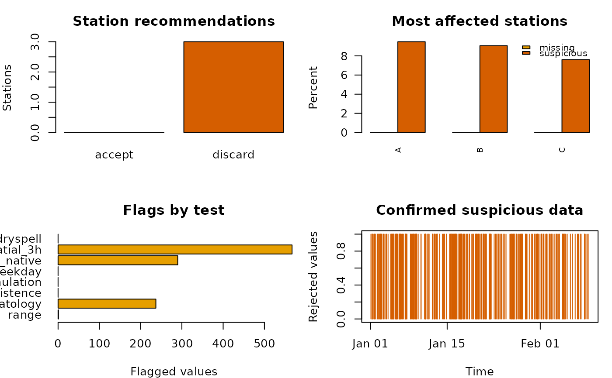

Quality control of sub-daily precipitation time series
precipQC_subdaily.RdApplies physical, climatological, temporal, accumulation, spatial, dry-spell,
and homogeneity checks to one or more sub-daily precipitation series in a
zoo object. It returns auditable point flags, optional corrections, and
station acceptance recommendations without writing files.
Usage
precipQC_subdaily(
x, metadata=NULL, station.id="station", coords=c("lon", "lat"),
checks=c(range=TRUE, climatology=TRUE, persistence=TRUE,
daily.accumulation=TRUE, monthly.accumulation=TRUE,
weekday=TRUE, spatial=TRUE, dryspell=TRUE, breakpoint=TRUE),
lower=0, max.rate=401, wet.threshold=0.1,
climatology.prob=0.999, climatology.z=8,
climatology.min.samples=100L,
persistence.threshold=NULL, persistence.high.run=2L,
persistence.long.hours=24,
accumulation.factor=2,
weekday.min.wet=20L, weekday.alpha=0.001,
weekday.ratio=0.5, weekday.min.coverage=0.9,
spatial.hours=c(0, 1, 3, 6, 24), spatial.cr=3,
n.neighbours=10L, max.distance=50, min.neighbours=2L,
min.overlap=100L, min.correlation=0,
dryspell.days=15L, neighbour.wet.days=3L,
neighbour.fraction=1,
correction=c("none", "set_na", "spatial"),
min.evidence=2L, max.missing=0.2, max.suspicious=0.05,
min.years=1, discard.breakpoint=FALSE,
elevation=NULL, elevation.scale=500
)Arguments
- x
A
zooobject with a strictly increasingPOSIXtindex and a modal interval shorter than one day. Each column is a station and must have a unique name. Values are assumed to be precipitation depths in mm for each interval. Gaps are allowed when their durations are integer multiples of the modal interval.- metadata, station.id, coords, elevation, elevation.scale
Station metadata and its identifier/coordinate column names. See
precipQC_daily. Metadata are optional. When supplied, identifier, longitude, and latitude field names are required; elevation in metres is optional and is activated by naming its field. Individual longitude or latitude entries may beNA; see the fallback rules inprecipQC_daily.- checks
Named logical vector. Any subset of
"range","climatology","persistence","daily.accumulation","monthly.accumulation","weekday","spatial","dryspell", and"breakpoint"can override the default of running every check.- lower
Physical lower limit in mm per interval.
- max.rate
Upper screening rate in mm/hour. It is multiplied by the detected interval length, so the range test uses a depth appropriate to the native time step. The default is the conservative world-record hourly value used by Lewis et al. (2021), not a local design-rainfall estimate.
- wet.threshold
Depth in mm separating dry and wet intervals.
- climatology.prob, climatology.z, climatology.min.samples
Empirical probability, robust transformed-scale multiplier, and minimum sample size used to estimate month-specific upper climatological limits.
- persistence.threshold
Minimum high value to test for short repeated runs. If
NULL, twice the station mean wet-day depth is used.- persistence.high.run
Minimum number of consecutive identical high values.
- persistence.long.hours
Duration at which any repeated wet value is suspicious. It is converted to a number of native intervals.
- accumulation.factor
Multiplier of the station mean wet-day depth used to screen possible daily and monthly totals recorded in one sub-daily interval.
- weekday.min.wet, weekday.alpha, weekday.ratio
Minimum annual wet-day count, significance level, and maximum observed-to-expected wet-day ratio for the weekday false-zero test. These have the same interpretation as the corresponding arguments of
precipQC_daily.- weekday.min.coverage
Minimum fraction of expected native intervals that must be observed before a sub-daily calendar day is included in the weekday test. It must be in
(0, 1].- spatial.hours
Accumulation durations in hours for spatial tests. Zero denotes the native interval. Positive values must be integer multiples of the detected interval. Flags on accumulated windows are expanded to their contributing native observations.
- spatial.cr
Critical ratio for the transformed observation-neighbour residual.
- n.neighbours, max.distance, min.neighbours, min.overlap, min.correlation
Controls for selecting up to
n.neighbours, normally withinmax.distancekm, and for calculating spatial estimates. SeeprecipQC_daily.- dryspell.days, neighbour.wet.days, neighbour.fraction
Controls for flagging target-station dry windows that selected neighbours do not corroborate.
- correction
"none"preserves all data;"set_na"replaces confirmed suspicious observations byNA;"spatial"uses native-scale spatial estimates where available andNAotherwise. No correction is made by default.- min.evidence
Number of coincident non-hard flags required to reject an observation. Physical range, persistence, accumulation, and corroborated dry-spell flags are hard evidence. The weekday test is non-hard evidence and therefore remains for review unless another active test corroborates it.
- max.missing, max.suspicious, min.years
Maximum missing fraction, maximum confirmed-suspicious fraction, and minimum record length used for station acceptance recommendations.
- discard.breakpoint
Logical. Whether a large significant homogeneity breakpoint should by itself cause a discard recommendation. The conservative default is
FALSE.
Details
The sub-daily workflow follows a layered rule base:
Range and temporal-resolution validation. Negative depths and depths exceeding a duration-adjusted screening record are flagged. The time index is checked for strict ordering and a consistent modal interval. This addresses impossible values, duplicated timestamps, and mixed frequencies discussed by Fileni et al. (2023) and Villalobos-Herrera et al. (2022), and implements the gross-error and range stages of Jurczyk et al. (2020).
Month-specific climatological plausibility. A
log1p-scale empirical/robust upper limit is estimated iteratively for each calendar month. The transformation reduces the strong positive skew of sub-daily rainfall, following the motivation for Box–Cox transformation and month-specific plausibility limits in El Hachem et al. (2022).Repeated values. Two or more identical values above a high threshold, or any identical wet value repeated for at least 24 hours, are flagged. These rules adapt the streak checks of Lewis et al. (2021) and the blocked-sensor consistency check of Jurczyk et al. (2020).
Daily and monthly accumulations. A large isolated interval preceded and followed by dry intervals is tested as a possible longer-period total placed at one timestamp. The daily test uses 23-hour flanks; the monthly test uses a preceding 28-day dry period and a 23-hour following flank. Blenkinsop et al. (2017) and Lewis et al. (2021) show why surrounding dryness is important for avoiding false flags.
Systematic weekday false zeros. Native observations are aggregated in memory to daily totals only when at least
weekday.min.coverageof the expected intervals is present. The daily wet-day occurrence test ofprecipQC_weekdayis then applied, and suspicious dry days are expanded back to their finite dry native intervals. This adapts the weekday-zero quality component of Estevez et al. (2022) without treating partially observed days as zero-rainfall days.Multi-scale spatial consistency. Leave-one-station-out robust neighbour estimates and critical ratios are calculated at the native, 1-, 3-, 6-, and 24-hour scales by default. Multi-scale testing follows El Hachem et al. (2022), who showed that an error may be visible at one accumulation but hidden at another; station-neighbour corroboration also follows the spatial consistency stage of Jurczyk et al. (2020). When elevation is supplied, neighbour ranking and inverse-distance weights also favour stations with similar height. Missing target coordinates trigger correlation-based selection; a located target uses unlocated neighbours only after eligible located neighbours.
Spatial dry-spell consistency. Fifteen-day dry windows are flagged only when neighbours record at least three wet days, adapting the GSDR-QC rule described by Lewis et al. (2021) and the regional suspect-zero logic of Golkhatmi and Farzandi (2024).
Homogeneity. Sub-daily values are first aggregated to daily totals. Pettitt tests are then applied to annual totals, wet-day counts, maxima, and extreme-day counts, with Holm-adjusted p-values. This is a diagnostic rather than a default discard rule, consistent with the multi-test caution of Stepanek et al. (2009).
Sub-hourly tip-time tests cannot be reconstructed from already accumulated
zoo values. In particular, the inter-tip statistic and 1-minute
thresholds of Villalobos-Herrera et al. (2022) require raw tip timestamps.
The present function instead checks the finest interval actually supplied and
then aggregates it to multiple durations.
Spatial disagreement is evidence for review, not proof of error, because short-duration convective rainfall can be highly localized. By default an observation is rejected only by a hard test or by agreement of at least two non-hard tests.
Value
An object of class "precipQC". It contains accepted and discarded
metadata data.frames, unmodified and optionally corrected zoo series
for accepted stations, a long-form suspicious table, a
corrections audit table, logical flag series for every active test,
station diagnostics, spatial diagnostics, neighbours, and settings. See
precipQC-class for the complete structure.
References
Blenkinsop, S., Lewis, E., Chan, S. C. and Fowler, H. J. (2017). Quality-control of an hourly rainfall dataset and climatology of extremes for the UK. International Journal of Climatology, 37, 722–740.
Lewis, E. et al. (2021). Quality control of a global hourly rainfall dataset. Environmental Modelling and Software, 144, 105169.
El Hachem, A. et al. (2022). Space-time statistical quality control of extreme precipitation observations. Hydrology and Earth System Sciences, 26, 6137–6146.
Villalobos-Herrera, R. et al. (2022). Sub-hourly resolution quality control of rain-gauge data significantly improves regional sub-daily return level estimates. Quarterly Journal of the Royal Meteorological Society, 148, 3252–3271.
Pritchard, D. et al. (2023). An observation-based dataset of global sub-daily precipitation indices (GSDR-I). Scientific Data, 10, 393.
Fileni, F., Fowler, H. J., Lewis, E., McLay, F. and Yang, L. (2023). A quality-control framework for sub-daily flow and level data for hydrological modelling in Great Britain. Hydrology Research, 54, 1357–1367.
Jurczyk, A., Szturc, J., Otop, I., Osrodka, K. and Struzik, P. (2020). Quality-based combination of multi-source precipitation data. Remote Sensing, 12, 1709.
Stepanek, P., Zahradnicek, P. and Skalak, P. (2009). Data quality control and homogenization of air temperature and precipitation series in the area of the Czech Republic in the period 1961–2007. Advances in Science and Research, 3, 23–26.
Golkhatmi, N. S. N. and Farzandi, M. (2024). Enhancing rainfall data consistency and completeness: a spatiotemporal quality control approach and missing data reconstruction using MICE on large precipitation datasets. Water Resources Management, 38, 815–833.
Estevez, J., Llabres-Brustenga, A., Casas-Castillo, M. C., Garcia-Marin, A. P., Kirchner, R. and Rodriguez-Sola, R. (2022). A quality control procedure for long-term series of daily precipitation data in a semiarid environment. Theoretical and Applied Climatology, 149, 1029–1041.
Author
Mauricio Zambrano-Bigiarini, mzb.devel@gmail.com
Examples
set.seed(2)
times <- seq(as.POSIXct("2020-01-01 00:00:00", tz="UTC"),
by="hour", length.out=24 * 40)
values <- matrix(stats::rexp(length(times) * 3), ncol=3)
values[values < 2] <- 0
values[10, 1] <- -1
colnames(values) <- c("A", "B", "C")
pcp <- zoo(values, times)
meta <- data.frame(station=colnames(pcp),
lon=c(-71.2, -71.1, -71.0),
lat=c(-33.2, -33.1, -33.0))
qc <- precipQC_subdaily(
pcp, metadata=meta, min.years=0,
spatial.hours=c(0, 1, 3),
checks=c(monthly.accumulation=FALSE, breakpoint=FALSE)
)
qc$station.summary
#> station expected observed missing.percent review.count review.percent
#> A A 960 960 0 275 0.2864583
#> B B 960 960 0 280 0.2916667
#> C C 960 960 0 170 0.1770833
#> suspicious.count suspicious.percent breakpoint.year breakpoint.indicator
#> A 91 0.09479167 NA <NA>
#> B 87 0.09062500 NA <NA>
#> C 73 0.07604167 NA <NA>
#> breakpoint.p.value breakpoint.relative.change breakpoint.n.indicators
#> A NA NA 0
#> B NA NA 0
#> C NA NA 0
#> breakpoint.flag record.years recommendation reason
#> A FALSE 0.109514 discard suspicious fraction exceeds limit
#> B FALSE 0.109514 discard suspicious fraction exceeds limit
#> C FALSE 0.109514 discard suspicious fraction exceeds limit
head(qc$suspicious)
#> time station original spatial.estimate spatial.score n.tests
#> 1 2020-01-01 09:00:00 A -1.000000 0 0.00000 1
#> 2 2020-01-01 16:00:00 A 0.000000 0 0.00000 1
#> 3 2020-01-01 17:00:00 A 4.491942 0 11.35521 3
#> 4 2020-01-01 18:00:00 A 0.000000 0 0.00000 1
#> 5 2020-01-02 04:00:00 A 0.000000 0 0.00000 1
#> 6 2020-01-02 05:00:00 A 0.000000 0 0.00000 1
#> tests action corrected correction
#> 1 range reject -1.000000 none
#> 2 spatial_3h review 0.000000 none
#> 3 climatology, spatial_native, spatial_3h reject 4.491942 none
#> 4 spatial_3h review 0.000000 none
#> 5 spatial_3h review 0.000000 none
#> 6 spatial_3h review 0.000000 none
plot(qc)
